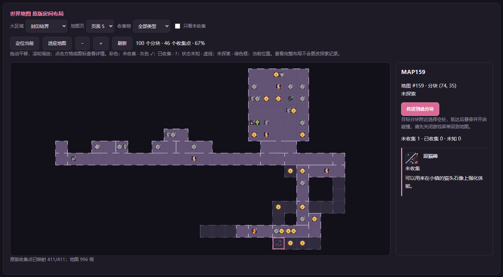
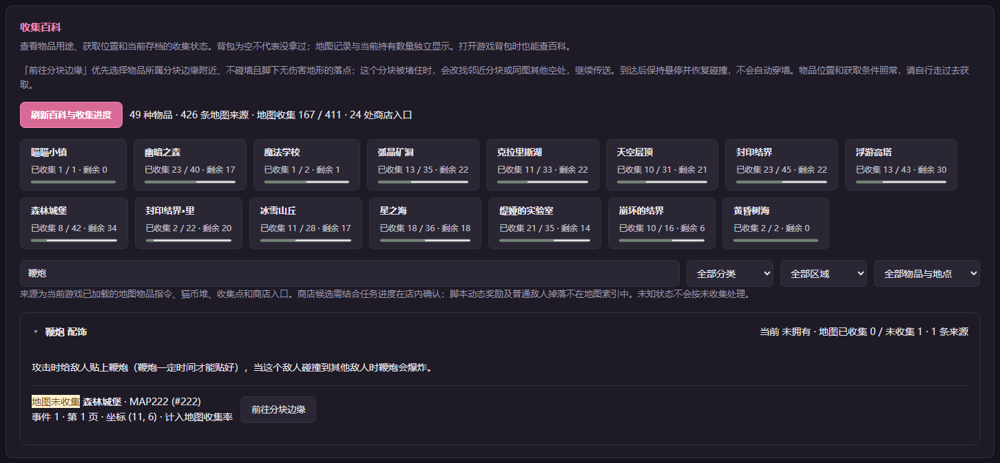
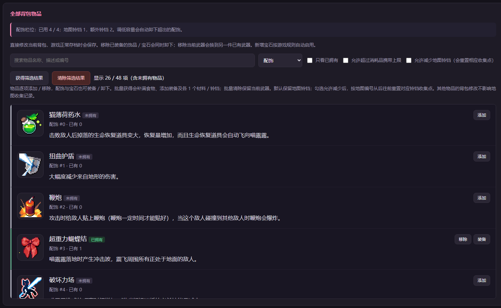

01 / FIND EVERY LAST DISCOVERY
全收集地图，寻找漏掉的角落
把区域、房间和收集点放在同一张地图上，查看收集状态并辅助前往目标附近。奖励仍需在游戏中实际取得，剧情条件跟随游戏进度。
EXPLORE AT YOUR OWN PACE
展开世界地图，找到藏在角落里的小小惊喜。
总览整个世界，或选择独立区域细看；“小镇周围”包含小镇、森林、学校和矿洞。
WORLD ATLAS
地图展示已导出的房间结构与来源点；未确认的获取条件统一标为“待核对”。灰色图标表示你已在本地清单中完成该事件。
A LITTLE SOMETHING TO KEEP
用途、来源与地图位置，放在同一张卡片里。
EVERY DISCOVERY COUNTS
给每一次发现打个勾，把冒险一点点填满。
0 / 0 个官方事件
首次使用清单为空。按官方收集事件计数；同一事件的多件奖励会一起勾选。导入会合并已完成记录，不会清空现有清单。浏览器之间不自动同步。
FACES AND STORIES ALONG THE WAY
认识旅途中的伙伴，也为尚未发生的故事留一点惊喜。
选择一个结局，展开触发方式与剧情概括。
旅途中遇见的人物，和他们各自的故事。
MILESTONES OF YOUR ADVENTURE
收好旅途中的每一枚纪念，也为未发生的故事留一点惊喜。
隐藏成就与结局内容默认遮挡，逐张展开后才显示名称、图标和条件。Steam 成就属于账号，普通游戏存档无法完整确认账号成就。
普通存档可在存档分析中读取；成就状态以已核实的本地来源为准，文件只在浏览器中处理，不会上传。
尚未读取成就状态。彩色图标仅为资料展示，不代表已解锁。
YOUR COMPANION IN THE ADVENTURE
查漏、搭配、回看台词，让游戏里的探索更从容。
Wiki 用于查攻略、看人物资料和记录收集进度。全能助手连接正在运行的 Windows 版游戏，让地图、背包、战斗辅助和剧情工具集中在一个面板里。
阅读开发记录 ↗
把区域、房间和收集点放在同一张地图上，查看收集状态并辅助前往目标附近。奖励仍需在游戏中实际取得，剧情条件跟随游戏进度。

按类别寻找食物、配饰和成长道具，结合物品说明与收集情况整理下一段路线。适合在游戏运行时快速核对目标。

在角色与背包面板中管理物品数量和配饰，方便尝试不同组合。建议先用助手建立独立游戏副本，再进行数值与物品调整。
悬停用于空中停留和取景；穿墙可单独开启。伤害与受击倍率分别调整，按需要改变战斗节奏。
按台词、说话人、地图或故事编号寻找对话。结合剧情回看和临时摆拍功能，重新捕捉喜欢的片段；只想看对白时可使用“只播台词”。
以上为项目公开功能与真实界面截图。点击项目主页查看当前版本与使用说明；本页不会自动下载、连接或修改游戏。
NOTES BEHIND THE NOTEBOOK
资料有出处，未知有标记，进度由你记录。
这是一个由爱好者整理、维护的非官方百科。想把《咸鱼喵喵》的地图、物品、全收集、人物剧情和成就放到一起，让大家查东西方便一点。
资料会继续补充和修正。如果发现错误，或者有想补充的内容，欢迎到 GitHub 反馈。
开发过程、更新记录，还有其他折腾的东西，都会放在这里。
网页源码与资料整理放在这里，欢迎查看、反馈和参与完善。
人物与剧情等文字摘编、整理自萌娘百科及其贡献者，具体出处保留在对应条目中。这部分整理和改写内容沿用 CC BY-NC-SA 4.0（署名—非商业性使用—相同方式共享）协议。转载或改编时，请保留原作者与整理者的署名、来源链接和许可说明，并遵守相同协议。
游戏图标、像素图、立绘和 Logo 等图片来自《咸鱼喵喵》官方游戏素材，相关权利归原权利人所有。上述文字协议不适用于这些图片。
勾选后，浏览器会使用本地存储（localStorage）记住已完成事件。清理浏览器数据、更换浏览器或移动文件，都可能导致记录不可见。
建议定期“导出清单”，保存 JSON 文件。导入只接受本 Wiki 的清单格式，并检查事件编号；验证通过后合并已完成记录。
萌娘百科来源文本按各卡片标注的 CC BY-NC-SA 4.0 授权整理，保留来源链接并说明是否改写。人物像素图与立绘来自本地游戏素材，图片来源与权利说明见人物数据与资料来源。人物文字的 CC 许可不适用于游戏图像。
A NOTE FROM YOUR OWN ADVENTURE
看看这一程走到了哪里，再把已确认的发现记进清单。
选择原版游戏的 .rmmzsave 文件，最大 4 MiB。文件只在当前浏览器内读取，不会上传，也不会改写原文件。
尚未选择存档。支持当前已核实的原版存档格式。
仅把已确认完成的事件合并到 Wiki 本地清单。现有勾选会保留；背包数量不会被当成地图收集记录。
查看清单 →